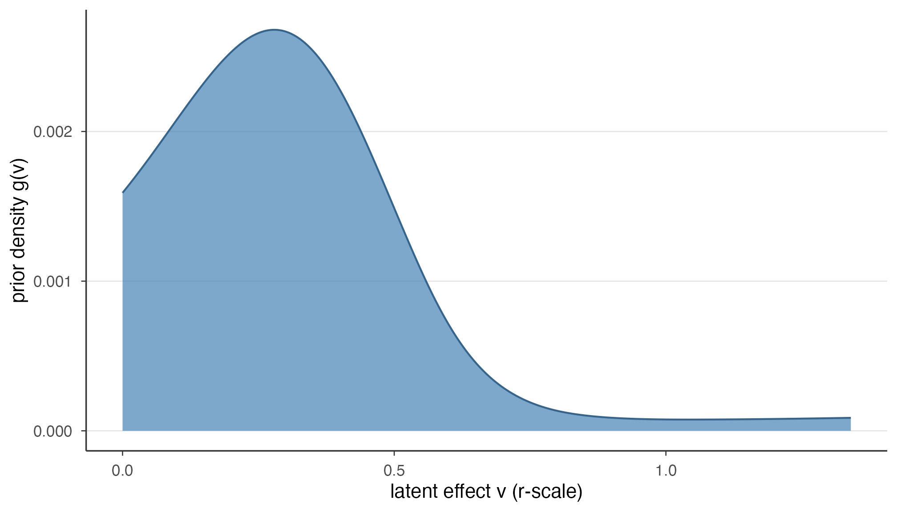
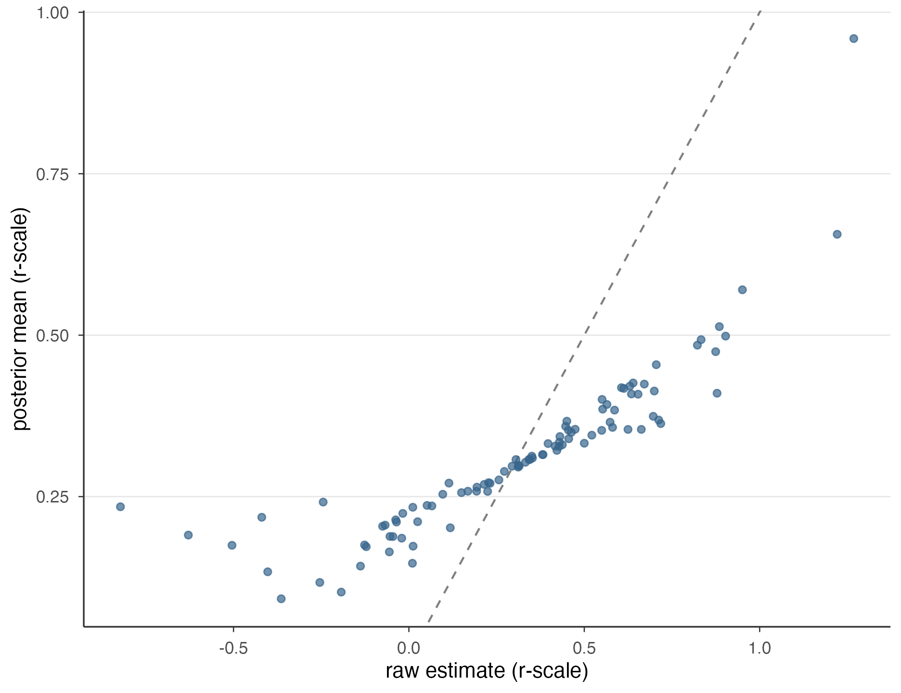
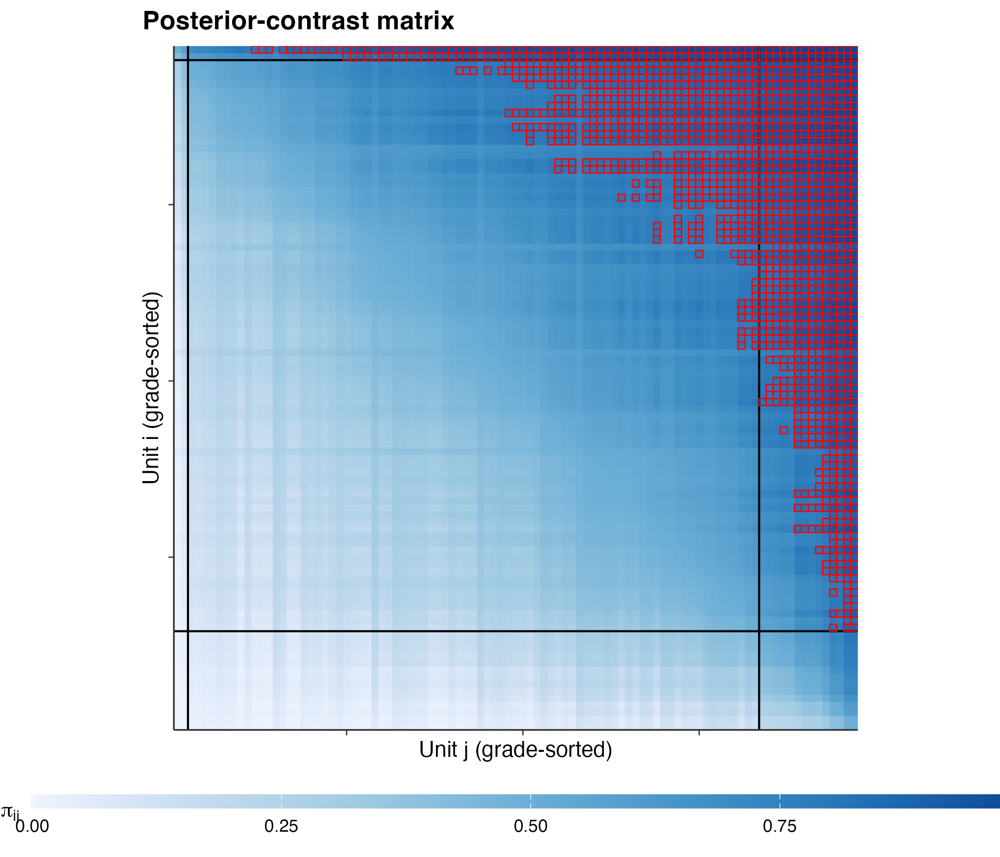

M3: Deconvolution and posterior
JoonHo Lee
2026-06-06
Source:vignettes/m3-deconvolution-and-posterior.Rmd
m3-deconvolution-and-posterior.RmdAbstract
This is the empirical-Bayes core of the KRW pipeline, stated rigorously. From the standardized r-scale that m2 hands forward, gradepath deconvolves a prior G over the latent effects — a log-spline density, with no parametric family assumed — that separates the true cross-unit spread from the measurement noise blurring each estimate. It then forms every unit’s posterior by combining its noisy estimate with that prior, so the noisier a unit’s estimate the harder its posterior shrinks toward the prior and the tighter its credible interval. From the posteriors it integrates the pairwise outranking matrix Pi, whose entry is the posterior probability that one unit’s latent effect exceeds another’s. This vignette states each step crisply and verifies it live on the bundled one-level parity fit: the prior integrates to one over its grid, the posterior means and standard deviations are demonstrably pulled in, and Pi is antisymmetric to machine zero with a one-half diagonal. The two-level industry extension — a tensor-product prior over a within-industry and a between-industry component, pushed forward to the theta-scale — is described here and verified in m5, since the fit shipped with the package is one-level.
This is the third method-track vignette and the heart of the empirical-Bayes machinery. m2 ended by handing forward one scale — the standardized r-scale — and two carriers, the matched moment vector and its covariance . This vignette takes that scale and derives the three objects the grading of m4 reads: the deconvolved prior , the empirical-Bayes posterior per unit, and the pairwise outranking matrix . We summarize the theory from Kline, Rose & Walters (Kline et al. 2024) and the empirical-Bayes lineage it sits in (Robbins 1956; Efron 2016; Walters 2024) rather than re-derive every line, and we follow each displayed equation with a verification panel checked live against the bundled fit.
We load that fit once, at the top. Every panel below is a fast read
off an already-fitted slot — get_prior,
get_posterior, or get_pairwise — so there is
no deconvolution solve anywhere in this document. The
fit is pre-solved: the deconvolution we are about to state has already
run, and here it is the ground truth we check the EB core against.
fit <- gp_parity_fit("race") # the proven 97-firm RACE card, grades 2 / 81 / 14This is the 97-firm RACE parity fit at the KRW baseline
lambda = 0.25. It is a one-level fit — no
industry structure — which is exactly the case this vignette verifies
end to end. The two-level industry extension is described in §5 and
verified in m5.
1. From a standardized scale to a recovered world
The r-scale handed over by m2 is not yet what the grades are built on. Each is a noisy read on the latent component : standardizing by removes the precision dependence but not the sampling blur. The cross-sectional spread of the observed is therefore the spread of the true latent effects plus the spread of the noise, combined in quadrature — wider than the truth. Deconvolution is the step that separates the two.
Formally it asks: given the observed (blurred) distribution and the known per-unit noise scale, what distribution of latent effects, once blurred, reproduces what we see? The answer is the prior — the recovered distribution of the true effects with the noise removed. This is the empirical-Bayes program in its classical form (Robbins 1956; Efron 2010): the ensemble of noisy estimates identifies the prior they were drawn from even though no single estimate does.
Why the report card needs rather than the raw is the argument m2 made: the noisiest units look the most extreme by chance, so grading the raw estimates would hand the loudest grades to the least-certain units. is the corrective — it lets each unit’s posterior ask “given how noisy this estimate is, where does the latent effect most likely sit?” The pipeline is therefore three steps, in order: deconvolve the prior (§2), shrink to posteriors (§3), and compare every pair (§4). The two-level industry extension layers a second component onto and is the subject of §5.
2. The deconvolution problem
Write the standardized model from m2 as a measurement equation. On the r-scale each observation is the latent component plus Gaussian noise of per-unit scale :
The marginal distribution of the observed is the convolution of the unknown prior with the per-unit normal noise; recovering from that marginal is the deconvolution problem (Efron 2016; Walters 2024). We do not recover the latent draws one at a time — we recover the distribution they came from, which is both better identified (the ensemble is informative where a single estimate is not) and exactly what the posterior of §3 requires.
The defining choice is that
is not assumed to belong to a parametric family.
gradepath follows KRW with a penalized log-spline
prior: the density on a fixed support grid is written as a softmax,
,
where
is a spline basis on the grid and
a short coefficient vector. The softmax keeps the density positive and
summing to one, and
is fit by penalized maximum likelihood so the convolved
matches the observed spread. The penalty is selected against the m2
carriers
and
— which is why the precision and deconvolution stages form one coupled
core, not two independent fits — and the support is capped from the
GMM-implied scales rather than the data maximum. gradepath’s one-level
deconvolution is native; its one-level slice is
cross-checked against ebrecipe’s eb_deconvolve
as a textbook sanity gate, with the KRW reference as the production
parity target. The full derivation of the penalty grid and the caps
lives in m5, where the
two-level version is built. The fact to carry here is that no
parametric family is assumed: the recovered
can be skewed or heavy-tailed if the data demand it.
Verification panel. Pull the deconvolved prior and
confirm it is a proper distribution on a fine grid.
get_prior(fit) returns paired support and
density vectors — the grid over the r-scale and the mass at
each grid point — plus summaries and metadata:
pr <- get_prior(fit)
sum(pr$density) # a proper distribution: mass sums to 1
#> [1] 1
length(pr$support) # a fine 1000-point grid over the r-scale
#> [1] 1000
range(pr$support) # the recovered support, on the r-scale
#> [1] 0.000000 1.340351
round(pr$mean, 3) # the prior mean (r-scale)
#> [1] 0.324
pr$metadata$n_carriers # how many units the prior was deconvolved from
#> [1] 97The density sums to 1 — a proper distribution — over a 1000-point
grid spanning roughly
,
with prior mean 0.324 on the r-scale. The prior was deconvolved from 97
units (the 97 firms). Two metadata fields are easy to misread:
pr$scale is the literal label “r” (a string naming the
scale, not a number), and pr$metadata$alpha is the
log-spline coefficient vector (here of length 5), the
shape parameters of the density, not a scalar penalty. Note what is
absent: there is no Gaussian “sigma” to read, because no
Gaussian was assumed.
ggplot(data.frame(v = pr$support, g = pr$density), aes(v, g)) +
geom_area(fill = "steelblue", alpha = 0.7, colour = "steelblue4") +
labs(x = "latent effect v (r-scale)", y = "prior density g(v)") +
theme_gradepath()
The deconvolved prior density G over the standardized r-scale, recovered by gradepath’s native log-spline deconvolution with no parametric family assumed. The shaded area integrates to one; its spread is the estimated true spread of the latent effects, with the measurement noise removed.
The shaded shape is the recovered world: the spread of latent effects with the measurement noise stripped out, narrower than the histogram of the raw would be. That narrowing is the deconvolution doing its work — the apparent excess spread in the raw estimates was noise, and the prior has set it aside.
3. The empirical-Bayes posterior
With in hand, each unit’s posterior follows by Bayes’ rule: combine the unit’s own likelihood — its estimate at noise scale — with the shared prior (Walters 2024):
The numerator is the product of two factors. The likelihood concentrates around the unit’s own estimate ; the prior concentrates where units like this one usually land. The posterior is their normalized product, and because lives on a discrete grid the integral is a finite sum — no simulation is needed in the one-level case.
The reported posterior mean and posterior standard deviation are the first two moments of this distribution, and the credible interval is read off its percentiles at the fit’s interval level. The empirical-Bayes signature is shrinkage, with a precise shape: a unit measured tightly (small ) has a sharp likelihood that dominates the prior, so its posterior mean sits near its estimate; a unit measured loosely (large ) has a flat likelihood the prior overrides, so its posterior mean is pulled hard toward the body of . The noisier the estimate, the harder it shrinks — the empirical-Bayes generalization of James–Stein shrinkage to a nonparametric prior. The credible interval is correspondingly narrower than a naive standard-error band, because the prior contributes information.
Verification panel. Shrinkage leaves two checkable
fingerprints. First, the posterior means are less spread than
the raw estimates — pulling everything toward a common prior compresses
the range. Second, the posterior standard deviations are
smaller than the raw standard errors — borrowing strength
sharpens nearly every unit (96 of 97).
as.data.frame(get_posterior(fit)) lays the units out one
per row, with the raw estimate/se alongside
posterior_mean/posterior_sd and the interval
endpoints:
post <- get_posterior(fit)
pdf <- as.data.frame(post)
names(pdf) # raw (estimate, se) and posterior columns
#> [1] "estimate" "se"
#> [3] "id" "label"
#> [5] "posterior_mean" "posterior_sd"
#> [7] "lower" "upper"
#> [9] "scale" "metadata.level"
#> [11] "metadata.interval_level" "metadata.reporting.posterior_mean"
#> [13] "metadata.reporting.posterior_sd" "metadata.reporting.lower"
#> [15] "metadata.reporting.upper" "metadata.reporting.scale"
#> [17] "metadata.reporting.level" "metadata.has_reporting"
# fingerprint 1: the posterior means are pulled in (less spread than the estimates)
c(estimate_sd = sd(pdf$estimate),
posterior_mean_sd = sd(pdf$posterior_mean))
#> estimate_sd posterior_mean_sd
#> 0.3841354 0.1234159
# fingerprint 2: the posterior uncertainty is smaller than the raw se
c(mean_se = mean(pdf$se),
mean_posterior_sd = mean(pdf$posterior_sd))
#> mean_se mean_posterior_sd
#> 0.3138207 0.1635515Both fingerprints hold. The raw estimates spread with , while the posterior means spread with the smaller — the means are pulled in. The average raw standard error exceeds the average posterior standard deviation — nearly every unit’s uncertainty has shrunk (96 of 97; one unit, krw_race_062, edges up where the prior is more diffuse). Neither number was assumed; both fall out of combining the estimates with the deconvolved .
ggplot(pdf, aes(estimate, posterior_mean)) +
geom_abline(slope = 1, intercept = 0, linetype = "dashed", colour = "grey50") +
geom_point(alpha = 0.7, colour = "steelblue4") +
labs(x = "raw estimate (r-scale)", y = "posterior mean (r-scale)") +
theme_gradepath()
Shrinkage made visible: each unit’s posterior mean (vertical) against its raw estimate (horizontal), with the 45-degree line of no shrinkage. Points fall inside the line, pulled toward the prior, and the most extreme estimates are pulled the most.
The points sit inside the 45-degree line and are flatter than it — shrinkage drawn in two dimensions. The largest raw estimates, which are also the noisiest, have posterior means well below the line; the units near the prior mean barely move.
4. The pairwise outranking matrix Pi
The grades of m4 read neither the prior nor a posterior mean directly. They read a single matrix that summarizes every pairwise comparison. For each ordered pair ,
the posterior probability that unit ’s latent effect exceeds unit ’s (Walters 2024). The product form encodes that the two posteriors are conditionally independent given the estimated prior , which holds in the one-level model because is treated as known. gradepath computes the integral by CDF integration over the r-scale posterior weights, back-transforming each unit’s support to its own reporting scale before the comparison (the precision adjustment is unit-specific), then stabilizes the result. The magnitude of is exactly how confidently the evidence orders one unit above another: near or when the two posteriors barely overlap, near when they coincide and the data cannot separate the units.
Two structural facts are enforced as deliberate invariants. A unit compared to itself is a coin flip, so the diagonal is fixed at . And a pair and its mirror agree: , since ties are measure-zero under the continuous prior — the lower triangle is filled as rather than recomputed, so antisymmetry holds to machine zero. This matrix is the only numeric object the grade integer program of m4 consumes; everything upstream of it is empirical Bayes, everything downstream is social choice.
Verification panel. Pull the matrix and check all three structural facts: its shape, its coin-flip diagonal, and its antisymmetry — both for a single pair and as the worst-case deviation across every off-diagonal pair.
M <- get_pairwise(fit)$matrix
dim(M) # 97 x 97: one row and column per unit
#> [1] 97 97
unique(round(diag(M), 3)) # the diagonal: a unit vs itself is 0.5
#> [1] 0.5
M[1, 2] + M[2, 1] # one pair: exactly 1 (antisymmetry)
#> [1] 1
max(abs((M + t(M))[upper.tri(M)] - 1)) # worst-case antisymmetry deviation
#> [1] 0The matrix is 97 97, its diagonal is the single value 0.5 (every unit ties itself), and the first pair sums to 1. The worst-case antisymmetry deviation across all off-diagonal pairs is 0, so holds to machine zero. These checks confirm the matrix carries the structure the grade program relies on.

The grade-sorted pairwise outranking matrix Pi (KRW Figure 5a). Each cell is the posterior probability that the row unit’s latent effect exceeds the column unit’s; units are ordered by grade, so decisive comparisons (near zero or one) sit off the diagonal and indecisive ones (near one-half) cluster along it.
Read the heatmap as a map of confidence. Far from the diagonal, where units of very different grades meet, the cells are saturated — the posteriors barely overlap, so the comparison is decisive. Near the diagonal, where neighbouring units meet, the cells fade toward the middle tone of — those units cannot be separated, which is exactly the information the grading must respect when deciding who may share a grade.
5. The two-level extension (xi (x) eta)
Everything above is the one-level model: a single prior deconvolved from the pooled ensemble. KRW’s industry model adds one layer, and it is the same machinery at a second scale. Split each firm’s latent component into a within-industry part (firm-specific, drawn once per firm) and a between-industry part (one industry effect per industry, shared by every firm in it). For race the two combine multiplicatively, ; for gender additively, .
KRW then deconvolve a two-level prior — the tensor
product
of a within-industry density and
a between-industry density, each its own log-spline on its own grid, fit
jointly on a two-dimensional grid — and push it forward
to the
-scale
over both supports at once. gradepath performs this natively, as an
internal theta-pushforward step (gp_pushforward_theta, an
internal kernel the two-level pipeline calls — not a verb you call
yourself). Two features have no one-level analogue. The
pushforward marginalizes the joint prior over
both
and
,
which the single-support one-level transform cannot express. And the
pairwise integral picks up a same-industry override:
because two firms in one industry share the single effect
,
their conditional independence (§4) fails, and the joint importance
weight counts the shared industry likelihood once,
,
rather than as the product
— using the product would square that one piece of shared industry
evidence and bias every same-industry entry of
.
Neither feature is exercised by the fit loaded here, because this fit is one-level — there is no industry structure in it to verify against. So the two-level deconvolution, its pushforward, and the same-industry override are derived and verified in m5 (the M2 surface), against the industry fixtures. Do not reach for an industry fit here; the one-level objects of §2–§4 are the whole story for this vignette. The point to carry forward is only that the prior → posterior → arc extends to industries by adding the between-industry layer and the override, with everything downstream of unchanged.
6. Where to next
With the prior deconvolved, the posteriors shrunk, and the pairwise matrix checked for its structure, the EB core is complete and the pipeline turns to grading:
- Foundations and notation — m1 fixes every symbol used above — , , the r-scale — and the two frozen invariants the later stages assume.
- Precision and standardization — m2 derives the r-scale and the carriers , that this vignette’s deconvolution consumes; its §7 is the one-paragraph version of what m3 received.
-
Grading frontier and report cards —
vignette("m4-grading-frontier-and-report-cards")feeds the pairwise matrix of §4 to the grade integer program, producing grades that are integer labels in — not letter grades — along the frontier. -
Two-level and calibration —
vignette("m5-two-level-and-calibration")builds and verifies the two-level industry model of §5 — the deconvolution, the pushforward, and the same-industry override — and validates the whole pipeline by Monte Carlo.
For the workflow side, a1 is the first contact, a2 runs this same deconvolution and posterior stage hands-on with race and gender side by side, a3 covers the posterior and pairwise accessors used above, a4 is the figure gallery the prior and contrast plots come from, and a5 covers the calibration harness. Throughout, gradepath’s printed output is result-first and quantity-anchored (the package decision GP-DEC-14-A): it names the quantity — a posterior gap, an outranking probability — rather than a verdict, so the same code path serves both demographics without the printed text inverting on one of them.
Provenance
sessionInfo()
#> R version 4.6.0 (2026-04-24)
#> Platform: aarch64-apple-darwin23
#> Running under: macOS Tahoe 26.2
#>
#> Matrix products: default
#> BLAS: /Library/Frameworks/R.framework/Versions/4.6/Resources/lib/libRblas.0.dylib
#> LAPACK: /Library/Frameworks/R.framework/Versions/4.6/Resources/lib/libRlapack.dylib; LAPACK version 3.12.1
#>
#> locale:
#> [1] en_US/en_US/en_US/C/en_US/en_US
#>
#> time zone: America/Chicago
#> tzcode source: internal
#>
#> attached base packages:
#> [1] stats graphics grDevices utils datasets methods base
#>
#> other attached packages:
#> [1] ggplot2_4.0.3 gradepath_0.5.0
#>
#> loaded via a namespace (and not attached):
#> [1] Matrix_1.7-5 ebrecipe_0.5.0 gtable_0.3.6 jsonlite_2.0.0
#> [5] dplyr_1.2.1 compiler_4.6.0 tidyselect_1.2.1 slam_0.1-55
#> [9] dichromat_2.0-0.1 jquerylib_0.1.4 splines_4.6.0 systemfonts_1.3.2
#> [13] scales_1.4.0 textshaping_1.0.5 yaml_2.3.12 fastmap_1.2.0
#> [17] lattice_0.22-9 R6_2.6.1 labeling_0.4.3 generics_0.1.4
#> [21] knitr_1.51 htmlwidgets_1.6.4 gurobi_13.0-1 tibble_3.3.1
#> [25] desc_1.4.3 bslib_0.11.0 pillar_1.11.1 RColorBrewer_1.1-3
#> [29] rlang_1.2.0 cachem_1.1.0 xfun_0.57 fs_2.1.0
#> [33] sass_0.4.10 S7_0.2.2 otel_0.2.0 cli_3.6.6
#> [37] withr_3.0.2 pkgdown_2.2.0 magrittr_2.0.5 digest_0.6.39
#> [41] grid_4.6.0 lifecycle_1.0.5 vctrs_0.7.3 evaluate_1.0.5
#> [45] glue_1.8.1 farver_2.1.2 ragg_1.5.2 rmarkdown_2.31
#> [49] tools_4.6.0 pkgconfig_2.0.3 htmltools_0.5.9